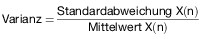
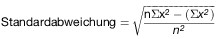

- 1
Allgemeines
- 1.1
Anwendungsbereich
Diese Anlage regelt die Anforderungen an Partikelminderungssysteme, die für eine Nachrüstung von mit Selbstzündungsmotor angetriebenen Nutzfahrzeugen oder mobilen Maschinen und Geräten, für die oder deren Motor § 47 Absatz 6 oder Absatz 8b gilt, vorgesehen sind. Im Sinne dieser Vorschrift gelten als Nutzfahrzeuge
- a)
Kraftfahrzeuge der Klasse M, ausgenommen Personenkraftwagen (M1)
- b)
Kraftfahrzeuge der Klasse N
nach Anhang II Abschnitt A und Abschnitt C der Richtlinie 70/156/EWG die mit Selbstzündungsmotor angetrieben und mit Dieselkraftstoff nach der Richtlinie 98/70/EG betrieben werden.
- 1.2
Begriffsbestimmungen und Abkürzungen
Beladungszustand:
Konstanter Partikelbeladungszustand des Partikelminderungssystems unter bestimmten Fahrzuständen ohne externe Regenerationsmaßnahmen.
ESC-Prüfzyklus:
Prüfzyklus – bestehend aus 13 stationären Prüfphasen – nach Anhang III Anlage 1 der Richtlinie 2005/55/EG in der Fassung der Richtlinie 2006/51/EG (ABl. L 152 vom 7.6.2006, S. 11).
ELR-Prüfzyklus:
Prüfzyklus – bestehend aus einer Folge von Belastungsschritten bei gleich bleibenden Drehzahlen – nach Anhang III Anlage 1 der Richtlinie 2005/55/EG in der Fassung der Richtlinie 2006/51/EG.
ETC-Prüfzyklus:
Prüfzyklus – bestehend aus instationären, wechselnden Phasen – nach Anhang III Anlage 2 der Richtlinie 2005/55/EG in der Fassung der Richtlinie 2006/51/EG.
NRSC-Zyklus:
Stationärer Test für mobile Maschinen und Geräte nach Anhang III Nummer 3 der Richtlinie 97/68/EG in der Fassung der Richtlinie 2004/26/EG.
NRTC:
Dynamischer Test für mobile Maschinen und Geräte nach Anhang III Nummer 4 der Richtlinie 97/68/EG in der Fassung der Richtlinie 2004/26/EG.
Partikelminderungssystem (PMS):
Eine Abgasnachbehandlung zur Verringerung der Partikelemission durch mechanische und/oder aerodynamische Separation sowie durch Diffusions- und/oder Trägheitseffekte. Motorspezifische Änderungen an Bauteilen und elektronischen Bauteilen und elektronischen Komponenten zählen nicht zu den Partikelminderungssystemen. Sind jedoch für die Nachrüstung mit dem PMS zusätzliche Maßnahmen an emissionsrelevanten Bauteilen und/oder Systemkomponenten wie beispielsweise eine Änderung der Abgasrückführungs(AGR)-Regelung zur weiteren einwandfreien Funktion notwendig, muss hierfür eine Freigabe durch den Motorenhersteller vorliegen.
Geregeltes Partikelminderungssystem:
Partikelminderungssystem, das einen nach Nummer 5 oder Nummer 6 ermittelten gravimetrischen Partikelrückhaltegrad von mindestens 90 Prozent besitzt.
Kontinuierliche Regeneration:
Regenerationsprozess eines Nachbehandlungssystems, der dauerhaft oder wenigstens einmal pro Prüfzyklus abläuft.
Ungeregeltes Partikelminderungssystem:
Partikelminderungssystem, welches einen nach Nummer 5 oder Nummer 6 ermittelten gravimetrischen Partikelrückhaltegrad von mindestens 50 Prozent besitzt. Für Motoren mit einem Hubraum von unter 0,75 dm3 je Zylinder und einer Nennleistungsdrehzahl von über 3 000 min-1 gilt ein Partikelrückhaltegrad von mindestens 30 Prozent.
Partikelminderungssystemfamilie:
Familie aller Partikelminderungssysteme, die in ihrer Funktion als technisch identisch nach den Übereinstimmungskriterien für Systemfamilien in Nummer 7.1 angesehen werden.
Periodisch regenerierendes Partikelminderungssystem:
Partikelminderungssystem, bei dem eine periodische Regeneration wiederkehrend in weniger als 100 Stunden Motorbetrieb abläuft.
Rückhaltegrad:
Verhältnis von zurückgehaltener Partikelmasse durch das Partikelminderungssystem zu der Partikelmasse im Ausgangszustand des Fahrzeugs, gemessen im ESC-Prüfzyklus für PMK 0 und PMK 1 und im ETC-Prüfzyklus für PMK 2 bzw. im NRSC-Zyklus für PMK 0, PMK 1 und NRTC-Zyklus für PMK 2 und berechnet nach der Formel in Nummer 5.1 oder Nummer 6.1.
Abkürzungen:
| η: | Rückhaltegrad |
| Mpi: | gewichtete Gesamtemission (g/kWh) bei geregelten Partikelminderungssystemen |
| Mri: | Emission während der Regeneration |
| Msi: | über mehrere Zyklen gemessene gemittelte Emission ohne Regeneration (g/kWh) |
| MGas: | Emission der gasförmigen Komponenten |
| PT: | Partikelemission |
| PTNg: | arithmetisch gemittelte Partikelemission im nachgerüsteten Zustand nach Nummer 4.1 oder Nummer 6 |
| PTS: | arithmetisch gemittelte Partikelemission des Motors ohne Partikelminderungssystem aus mindestens zwei Zykluswerten des jeweils anzuwendenden Zyklus |
| VF: | Volumen des Partikelminderungssystems |
| VH: | Hubvolumen des Motors |
- 2
Definitionen der Partikelminderungsklassen
Mit einem Partikelminderungssystem nachgerüstete Nutzfahrzeuge gehören zur Partikelminderungsklasse
- a)
PMK 01, wenn sie die in Nummer 3.4.1,
- b)
PMK 0, wenn sie die in Nummer 3.4.2 unter Abschnitt 1, 2 oder 3,
- c)
PMK 1, wenn sie die in Nummer 3.4.3 unter Abschnitt 1, 2 oder 3,
- d)
PMK 2, wenn sie die in Nummer 3.4.4 unter Abschnitt 1, 2 oder 3,
- e)
PMK 3, wenn sie die in Nummer 3.4.5 unter Abschnitt 1,
- f)
PMK 4, wenn sie die in Nummer 3.4.6
der Anlage XIV beschriebenen Anforderungen einhalten.
- 3
Anforderungen an Partikelminderungssysteme
Der Antragsteller muss durch die in den Nummern 4 und 5 oder 6 beschriebenen Prüfungen belegen und bestätigen, dass die Funktionsfähigkeit des Systems bei bestimmungsgemäßem Betrieb in
- a)
Nutzfahrzeugen über eine Kilometerleistung von 80 000 km bei Motoren mit einem Hubraum von unter 0,75 dm3 je Zylinder und einer Nennleistungsdrehzahl von über 3 000 min-1, ansonsten von 200 000 km oder über eine Lebensdauer von bis zu sechs Jahren – je nachdem, welches Kriterium zuerst erreicht wird –,
- b)
mobilen Maschinen oder Geräten über 4 000 Betriebsstunden oder über eine Lebensdauer von bis zu sechs Jahren – je nachdem, welches Kriterium zuerst erreicht wird –
gewährleistet ist. Die Partikelminderungssysteme dürfen nicht mit Einrichtungen ausgerüstet sein, die diese Systeme außer Funktion setzen; ansonsten gelten die Anforderungen nach Nummer 3.2.
- 3.1
Übereinstimmungskriterien
Das Partikelminderungssystem darf in folgenden Merkmalen nicht abweichen:
- a)
Rückhalteart und Arbeitsweise Minderungsmaterial (Metall, Keramik),
- b)
Minderungskonstruktion des Filtermaterials (Platten, Geflecht, gewickelt, Zellen-/Material-/Vliesdichte, Porosität, Porendurchmesser, Taschen-/Schaufel-/Kugelanzahl, Oberflächenrauigkeit, Draht-/Kugel-/Faserdurchmesser),
- c)
Mindestbeschichtung des Partikelminderungssystems bzw. vorgeschalteter Katalysatoren (g/ft3),
- d)
Canning/Verpackung (Lagerung/Halterung des Trägers),
- e)
Volumen ± 30 Prozent,
- f)
Regenerationstyp (periodisch oder kontinuierlich),
- g)
Regenerationsstrategie (katalytische, thermische, elektrothermische Regeneration),
- h)
Art der Additivierung/des Dosiersystems (falls vorhanden),
- i)
Typ des Additivs (falls vorhanden),
- j)
Anbringungsgegebenheiten (max. + 0,5 m Anbringungsdifferenz zwischen Turboladerausgang (Turbine) und Einlass Partikelminderungssystem),
- k)
mit oder ohne vorgeschaltetem Oxidationskatalysator.
Weiterverwendung des oder der vorhandenen Oxidationskatalysator(en):
Dem Minderungssystem vorgeschaltete Oxidationskatalysatoren können bei der Nachrüstung im Einzelfall weiter verwendet werden, wenn diese nachweislich:
- a)
nicht älter als fünf Jahre sind,
- b)
bei Motoren mit einem Hubraum von unter 0,75 dm3 je Zylinder und einer Nennleistungsdrehzahl von über 3 000 min-1 nicht länger als 80 000 km, ansonsten 150 000 km im Fahrzeug verbaut waren (Nachweis der Laufleistung über Serviceheft und Wegstreckenzähler) und
- c)
nicht mit sichtbaren Mängeln behaftet sind oder
- d)
der Hersteller des Partikelminderungssystems im Rahmen der unter Nummer 8 geforderten Betriebserlaubnis nachweist, dass die entsprechend geforderten Grenzwerte auch ohne den/die serienmäßigen Oxidationskatalysator(en) eingehalten werden (Betriebserlaubnis muss Nachweis enthalten).
Wird keiner der vorgenannten Nachweise erbracht, sind die Oxidationskatalysatoren vor der Nachrüstung mit dem Partikelminderungssystem zu erneuern.
Zur Prüfung des Partikelminderungssystems auf dem Motorenprüfstand muss das System mindestens in einem Abstand von 2 m zum Ausgang des Turboladers (Turbine) angebracht werden. Kann der Antragsteller nachweisen, dass innerhalb seines späteren Verwendungsbereichs ein kürzerer Abstand als maximaler Abstand zu betrachten ist, kann die Leitungslänge entsprechend gekürzt werden. Isolationen oder Ähnliches sind nur zulässig, wenn diese auch im späteren Fahrzeugeinsatz Verwendung finden.
- 3.2
Aktive Einrichtungen
Sind im oder mit dem PMS Einrichtungen vorhanden und verbaut, die dazu führen, dass unter bestimmten Voraussetzungen die für das System nach Nummer 2 bestimmten Grenzwerte nicht mehr eingehalten werden, so muss der Antragsteller nachweisen,
- a)
unter welchen Bedingungen solche Einrichtungen aktiviert/deaktiviert werden,
- b)
dass sie lediglich zum Schutze des PMS oder des Motors und/oder der Regeneration des PMS dienen und nicht dauerhaft aktiviert werden,
- c)
dass nach einer Aktivierung die Einrichtung nach spätestens zwei für das System nach Nummer 2 bestimmten Prüfzyklen derart deaktiviert wird, dass der ursprüngliche Zustand wieder hergestellt ist. Der Nachweis muss in einem Dauerlauf, der mindestens fünf Aktivierungen/Deaktivierungen beinhaltet, erbracht werden,
- d)
dass die vorgegebenen Dauerhaltbarkeitskriterien eingehalten werden und
- e)
dass der Fahrer über die Aktivierung einer solchen Einrichtung informiert wird.
- 3.3
Kraftstoff
- 3.3.1
Kraftstoffqualität
Die zur Prüfung der Partikelminderungssysteme heranzuziehenden Messungen erfolgen mit handelsüblichen Kraftstoffen nach Nummer 1.1.
- 3.3.2
Kraftstoffverbrauch
Der auf den jeweilig anzuwendenden Prüfzyklus bezogene spezifische Kraftstoffverbrauch darf im nachgerüsteten Zustand maximal 4 Prozent über dem spezifischen Verbrauch im nicht nachgerüsteten Zustand liegen. Die Messungen zur Bestimmung des Kraftstoffverbrauchs erfolgen parallel zu den Messungen nach Nummer 4.1 für kontinuierlich regenerierende Systeme oder nach Nummer 6.2.1 für periodisch regenerierende Systeme.
- 4
Prüfung eines Partikelminderungssystems
Der Ablauf der Prüfung erfolgt nach den Vorgaben von Anhang I.
Für die Begutachtung des Partikelminderungssystems muss zum Beweis der Funktionstüchtigkeit im späteren Feldeinsatz ein Dauerlauf von mindestens 100 ETC-Prüfzyklen bzw. 50 NRTC-Zyklen durchgeführt werden. Der Dauerlauf dient dem Nachweis der Funktionstüchtigkeit und der Stabilität des Systems sowie dessen Wirkungsgrad. Die Messung der gasförmigen Emissionen sowie die der Partikel sollte mindestens in jedem fünften Prüfzyklus durchgeführt werden. Die Prüfung des Partikelminderungssystems erfolgt system- oder familiengebunden für den jeweiligen Verwendungsbereich, das heißt je Verwendungsbereich erfolgt eine Systemprüfung.
Darüber hinaus wird durch den Dauerlauf der Nachweis erbracht, ob es sich um ein kontinuierlich oder periodisch regenerierendes Partikelminderungssystem handelt.
Kann der Antragsteller nachweisen, dass ein für Fahrzeuge der Klasse M, ausgenommen M1, oder der Klasse N geprüftes Partikelminderungssystem baugleich Verwendung an Selbstzündungsmotoren zum Einsatz in mobilen Maschinen und Geräten Verwendung findet und der Familien-Prüfmotor nach Nummer 4.2 sowie die Übereinstimmungskriterien nach Nummer 7.1.2 ebenso für solche Anwendungen repräsentativ sind, kann der Anwendungsbereich auch auf Selbstzündungsmotoren zum Einsatz in mobilen Maschinen und Geräten erweitert werden. Eine umgekehrte Erweiterung ist nicht möglich.
- 4.1
Nachweis der kontinuierlichen Regeneration
Der Nachweis für einen kontinuierlich ablaufenden Regenerationsprozess gilt als erbracht, wenn über einen Zeitraum von mindestens 25 Prüfzyklen eine geeignete Bewertungsgröße am Partikelminderungssystem als konstant betrachtet werden kann. Als geeignete Bewertungsgrößen sind die Partikelemission sowie der Abgasgegendruck anzusehen. Diese Größen gelten bei einer Varianz unter 15 Prozent über 25 Prüfzyklen als konstant im Sinne dieser Prüfvorschrift. Die Messung des Abgasgegendrucks erfolgt hierbei kontinuierlich, die Messung der Partikelemission mindestens in jedem fünften Prüfzyklus.
Die Varianz berechnet sich wie folgt:

mit:

und:
Mittelwert = (x1 + x2 + ... + xn)/n
mit
n = Anzahl der Messwerte
x = jeweiliger Einzelmesswert
- 4.2
Auswahl des Familien-Prüfmotors
Der für die Prüfungen ausgewählte Motor sollte aus einer dem späteren Verwendungsbereich entsprechenden Motorenfamilie stammen.
Der Prüfmotor für den gewählten Verwendungsbereich muss folgende Kriterien erfüllen:
- –
100 Prozent bis 60 Prozent Leistung des Stamm-Motors im Verwendungsbereich (Stamm-Motor einer Motorenfamilie nach Anhang I Nummer 8.2 bzw. Anhang I Nummer 7 der in Nummer 7.1.2 genannten Richtlinien),
- –
kleinstes angewendetes Filtervolumen (VFI) für den gewählten Prüfmotor entsprechend der späteren Verwendung.
Als Prüfzyklus für die Abgasmessungen von Motoren für Nutzfahrzeuge auf dem Motorenprüfstand ist in allen Fällen der angepasste ESC-Prüfzyklus nach Anhang V und für PMK 2 auch der ETC-Prüfzyklus anzuwenden. Für Motoren für mobile Maschinen und Geräte ist für PMK 0 und PMK 1 der NRSC-Zyklus und für PMK 2 der NRTC-Zyklus anzuwenden. Die Messung der gasförmigen Emissionen sowie die der Partikel soll mindestens in jedem fünften Prüfzyklus innerhalb der Messungen zum Nachweis des Regenerationsverhaltens erfolgen.
- 4.3
Prüfung des Regenerationsverhaltens bei ungeregelten Systemen
Ungeregelte Partikelminderungssysteme nach Nummer 1.2 sind einer weiteren Prüfung zum Nachweis des Regenerationsverhaltens zu unterziehen.
Diese Prüfung erfolgt über eine Systembeladung bis zum Erreichen eines konstanten Abgasgegendrucks oder über eine Zeitdauer von höchstens 100 Stunden. Der Abgasgegendruck gilt als konstant, wenn frühestens nach 50 Stunden innerhalb eines Zeitraums von 30 Minuten der Abgasgegendruck innerhalb eines Bereichs von 4 mbar liegt. Die Prüfpunkte des Beladungs-Zyklus sind so zu wählen, dass eine maximale Abgastemperatur von 180 °C vor dem Partikelminderungssystem nicht überschritten wird. Die Beladung erfolgt vorzugsweise durch Anfahren einer konstanten Drehzahl im Bereich zwischen 50 Prozent bis 75 Prozent der Nenndrehzahl des Prüfmotors.
Nach Erreichung der Systembeladung oder nach höchstens 100 Stunden wird eine Regeneration eingeleitet. Diese kann beispielsweise durch das Anfahren der Prüfphase 8 im angepassten ESC-Prüfzyklus nach Anhang V veranlasst werden. Nach Abschluss der Regeneration sind Abgasmessungen in mindestens drei ESC-Prüfzyklen nach Anhang V und/oder drei ETC-Prüfzyklen bzw. drei NRSC- oder NRTC-Zyklen durchzuführen. Die dabei gemessenen Abgaswerte dürfen um nicht mehr als 15 Prozent für die gasförmigen Emissionen und 20 Prozent für die Emissionen der Partikelmasse von den gemessenen Abgaswerten vor dem Beladungs-Dauerlauf abweichen.
Der Hersteller muss bestätigen, dass die bei der Regeneration eintretenden Temperaturen maximal als unkritisch einzustufen sind.
Alternativ zum Beladungs-Dauerlauf kann der Hersteller ein bereits grenzbeladenes Partikelminderungssystem zur Regenerations-Prüfung vorstellen.
- 4.4
Prüfung der Rauchgastrübung im ELR-Prüfzyklus
Die Prüfung der Rauchgastrübung ist nach den Bestimmungen von Anhang III Anlage 1 Nummer 3 in Verbindung mit Nummer 6 der Richtlinie 2005/55/EG in der Fassung der Richtlinie 2006/51/EG (ABl. L 152 vom 7.6.2006, S. 11) durchzuführen. Im Anhang I ist festgelegt, wann diese Prüfung erfolgen muss.
- 5
Bewertungskriterien für kontinuierlich regenerierende Partikelminderungssysteme
Der Ablauf der Prüfung erfolgt nach den Vorgaben von Anhang I. Die Systemprüfung des Partikelminderungssystems gilt als bestanden, wenn folgende Kriterien erfüllt sind:
- 5.1
Rückhaltegrad
Der Rückhaltegrad η muss im nachgerüsteten Zustand
- a)
bei ungeregelten Systemen für Motoren mit einem Hubraum von unter 0,75 dm3 je Zylinder und einer Nennleistungsdrehzahl von über 3 000 min-1 mindestens 0,3 (= 30 Prozent), ansonsten mindestens 0,5 (= 50 Prozent),
- b)
bei geregelten Systemen mindestens 0,9 (= 90 Prozent)
erreichen.
Der Rückhaltegrad η berechnet sich wie folgt: η = 1 – (PTNg/PTS).
- 5.2
Limitierte Schadstoffe
Die limitierten Schadstoffe (CO, HC, NOx) müssen im Ausgangszustand und im nachgerüsteten Zustand die Grenzwerte der ursprünglich homologierten Schadstoffklasse einhalten. Das NO2/NOx-Verhältnis ist für den Ausgangs- und Nachrüstzustand zu dokumentieren und im Prüfbericht anzugeben.
Die Bestimmung der NO2- und NOx-Massenemissionen ist durch simultane Messung zu bestimmen. Die Messung kann durch jeweils einen NO2- und NOx-Analysator oder durch einen kombinierten NO2-/NOx-Analysator erfolgen.
- 5.3
Rauchgastrübung
Die nach Anhang III Anlage 1 Nummer 3 in Verbindung mit Nummer 6 der Richtlinie 2005/55/EG ermittelte Rauchgastrübung darf im Ausgangszustand und im nachgerüsteten Zustand den Wert von 0,8 m-1 nicht überschreiten.
- 6
Bewertungskriterien für periodisch regenerierende Partikelminderungssysteme
Der Ablauf der Prüfung erfolgt nach den Vorgaben von Anhang I.
Die Systemprüfung des Partikelminderungssystems gilt als bestanden, wenn folgende Kriterien erfüllt sind:
Für periodisch regenerierende Systeme wird die Partikelemission wie folgt bestimmt:
PT = (n1 × PT,n1 + n2 × PT,n2)/(n1 + n2)
mit:
| n1 = | Anzahl der angepassten ESC-Prüfzyklen nach Anhang V (PMK 0, PMK 1)/ETC-Prüfzyklus (PMK 2) zwischen zwei Regenerationen |
| n2 = | Anzahl der angepassten ESC-Prüfzyklen nach Anhang V (PMK 0, PMK 1)/ETC-Prüfzyklus (PMK 2) während der Regeneration (Minimum jeweils 1 Prüfzyklus) |
| PT,n1 = | Emission während der Beladung (arithmetischer Mittelwert aus der Messung zu Beginn der Beladung und aus der Messung zum Ende der Beladung; es sind auch mehr Messungen zulässig) |
| PT,n2 = | Emission während der Regeneration |
Für eine periodisch regenerierende Abgasnachbehandlung müssen die Emissionen mindestens in drei angepasste ESC-Prüfzyklen nach Anhang V (einmal zu Beginn, einmal zu Ende der Beladung und einmal während der Regeneration) bestimmt werden. Der Regenerationsprozess muss wenigstens einmal während eines angepassten ESC-Prüfzyklus nach Anhang V auftreten. Die Messungen können innerhalb des Dauerlaufs nach Nummer 4.1 erfolgen.
Werden mehr als zwei Messungen zwischen den Regenerationsphasen zur Emissionsbestimmung herangezogen, müssen diese weiteren Messungen in äquidistanten Abständen erfolgen und per arithmetischer Mittelwertbildung zusammengefasst werden.
Der Hersteller muss angeben, unter welchen Bedingungen (Beladung, Temperatur, Gegendruck, Zeitdauer usw.) die Regeneration im Normalfall auftritt. Für die Messungen während der Regeneration kann der Antragsteller ein grenzbeladenes System zur Messung beistellen.
Während der Regenerationsphasen dürfen die jeweiligen heranzuziehenden Grenzwerte überschritten werden.
- 6.1
Rückhaltegrad
Der Rückhaltegrad η muss im nachgerüsteten Zustand
- a)
bei ungeregelten Systemen für Motoren mit einem Hubraum von unter 0,75 dm3 je Zylinder und einer Nennleistungsdrehzahl von über 3 000 min-1 mindestens 0,3 (= 30 Prozent), ansonsten mindestens 0,5 (= 50 Prozent),
- b)
bei geregelten Systemen mindestens 0,9 (= 90 Prozent)
erreichen.
Der Rückhaltegrad η berechnet sich wie folgt: η = 1 – (PT/PTS).
- 6.2
Limitierte Schadstoffe
Die limitierten Schadstoffe (CO, HC, NOx) müssen unter Berücksichtigung der Berechnung in Nummer 6.2.1 im Ausgangszustand und im nachgerüsteten Zustand die Grenzwerte der ursprünglich homologierten Schadstoffklasse einhalten. Das NO2-/NOx-Verhältnis ist entsprechend Nummer 5.2 für den Ausgangs- und Nachrüstzustand zu dokumentieren und im Prüfbericht anzugeben.
- 6.2.1
Gewichtete gasförmige Emissionen
Für periodisch regenerierende Systeme wird die Emission der gasförmigen Komponenten wie folgt bestimmt:
MGas = (n1 × MGas,n1 + n2 × MGas,n2)/(n1 + n2)
mit:
| n1 = | Anzahl der angepassten ESC-Prüfzyklen nach Anhang V (PMK 0, PMK 1)/ETC-Prüfzyklus (PMK 2) zwischen zwei Regenerationen |
| n2 = | Anzahl der angepassten ESC-Prüfzyklen nach Anhang V (PMK 0, PMK 1)/ETC-Prüfzyklus (PMK 2) während der Regeneration (Minimum jeweils 1 Prüfzyklus) |
| MGas,n1 = | Emission während der Beladung (arithmetischer Mittelwert aus der Messung zu Beginn der Beladung und aus der Messung zum Ende der Beladung; es sind auch mehr Messungen zulässig) |
| MGas,n2 = | Emission während der Regeneration |
- 6.3
Rauchgastrübung
Die nach Anhang III Anlage 1 Nummer 3 in Verbindung mit Nummer 6 der Richtlinie 2005/55/EG ermittelte Rauchgastrübung darf im Ausgangszustand und im nachgerüsteten Zustand den Wert von 0,8 m-1 nicht überschreiten.
- 7
Anforderungen an Partikelminderungssysteme zur Bildung einer Systemfamilie
Systemfamilien können mit Partikelminderungssystemen unterschiedlicher Größe (Volumen) unter Einhaltung der Übereinstimmungskriterien nach Nummer 7.1 gebildet werden.
- 7.1
Übereinstimmungskriterien für Systemfamilien
- 7.1.1
Für die Festlegung des Verwendungsbereichs eines baugleichen Partikelminderungssystems, mit unterschiedlichen Volumina, für verschiedene Motoren oder Fahrzeugtypen, dürfen sich die Versuchsträger in den Merkmalen nach Nummer 3 nicht unterscheiden. Die Grenze des Verwendungsbereichs eines Systems wird je Motoren- bzw. Fahrzeughersteller durch Vermessen eines Prüfmotors nach Nummer 4.2 auf dem Motorenprüfstand bestimmt.
- 7.1.2
Der Verwendungsbereich einer PMS-Systemfamilie erstreckt sich über die mit dem jeweiligen Prüfmotor nach Nummer 4.2 abgedeckte Motorenfamilie nach der Richtlinie 2005/55/EG oder der Richtlinie 97/68/EG in der Fassung der Richtlinie 2004/26/EG (ABl. L 225 vom 25.6.2004, S. 3) eines Motorenherstellers. Kann der Antragsteller nachweisen, dass weitere Motorenfamilien des durch den Prüfmotor abgedeckten Verwendungsbereichs eines Herstellers oder Motorenfamilien weiterer Hersteller hinsichtlich der Familienbildungskriterien identisch sind, kann der Verwendungsbereich auf diese Motorenfamilien ausgeweitet werden. Für die Ausweitung des Verwendungsbereichs gelten als Familienbildungskriterien ± 15 Prozent des Einzelzylinderhubvolumens sowie das Ansaugverfahren (Turbo-/Saugmotor).
- 7.2
Anforderungen an den Prüfmotor
Der Prüfmotor muss im Serienzustand und im nachgerüsteten Zustand bei allen limitierten Emissionen die Werte der ursprünglich homologierten Grenzwertstufe einhalten.
Der Umbau am Prüfmotor muss dem beantragten späteren Serienstand der Umrüstung entsprechen.
Fahrzeuge mit „On-Board-Diagnose“ dürfen durch den Einbau des Nachrüstsystems in ihrer Überwachungsfunktion nicht eingeschränkt werden. Das elektronische Motorsteuergerät (z. B. für Einspritzung, Luftmassenmesser, Abgasminderung) darf durch die Nachrüstung nicht verändert werden.
Hat der Prüfmotor keine Abgasrückführung (AGR), darf der Verwendungsbereich auf Motoren mit AGR nur dann ausgeweitet werden, wenn der Antragsteller nachweisen kann, dass das Partikelminderungssystem keinen negativen Einfluss auf die limitierten gasförmigen Schadstoffkomponenten nimmt. Liegt eine entsprechende Freigabe des Motorenherstellers vor, ist kein Nachweis erforderlich.
- 7.3
Prüf- und Messablauf auf dem Motorenprüfstand
Im Anhang I ist der Prüfablauf für ungeregelte und geregelte Partikelminderungssysteme dargestellt.
- 7.4
Bewertung der Partikelminderungssysteme für den Verwendungsbereich innerhalb einer Motoren-/Fahrzeugfamilie
Die Prüfung eines Partikelminderungssystems für den Verwendungsbereich gilt als bestanden, wenn folgende Kriterien erfüllt sind:
- 7.4.1
Partikelemission
Die Partikelemission im nachgerüsteten Zustand muss unter dem Grenzwert der entsprechenden Minderungsstufe PMK 0, PMK 1 oder PMK 2 liegen.
- 7.4.2
Rückhaltegrad
Der Rückhaltegrad η muss im nachgerüsteten Zustand
- a)
bei ungeregelten Systemen für Motoren mit einem Hubraum von unter 0,75 dm3 je Zylinder und einer Nennleistungsdrehzahl von über 3 000 min–1 mindestens 0,3 (= 30 Prozent), ansonsten mindestens 0,5 (= 50 Prozent),
- b)
bei geregelten Systemen mindestens 0,9 (= 90 Prozent)
erreichen.
- 7.4.3
Rauchgastrübung
Die nach Anhang III Anlage 1 Nummer 3 in Verbindung mit Nummer 6 der Richtlinie 2005/55/EG ermittelte Rauchgastrübung darf im Ausgangszustand und im nachgerüsteten Zustand den Wert von 0,8 m–1 nicht überschreiten.
- 7.4.4
Limitierte gasförmige Komponenten
Die limitierten gasförmigen Komponenten müssen im Serienzustand und im nachgerüsteten Zustand die Grenzwerte der ursprünglich homologierten Schadstoffklasse unterschreiten.
- 8
Genehmigung
Sollen durch Einbau von Partikelminderungssystemen die Emissionen luftverunreinigender Partikel von bereits für den Verkehr zugelassenen Kraftfahrzeugen verringert werden, so ist für das Partikelminderungssystem eine
- a)
Betriebserlaubnis für Fahrzeugteile nach § 22 oder
- b)
Genehmigung im Rahmen einer Betriebserlaubnis für das Fahrzeug nach § 21
erforderlich.
Im Falle von Buchstabe a muss die Betriebserlaubnis für das Partikelminderungssystem die Einhaltung einer der Partikelminderungsklassen PMK 0, PMK 1 oder PMK 2 nach den Bestimmungen dieser Anlage nachweisen. Einzelheiten über die Verwendung des Partikelminderungssystems und des Einbaus ergeben sich aus der Betriebserlaubnis.
Im Falle von Buchstabe b hat der mit der Begutachtung beauftragte amtlich anerkannte Sachverständige festzustellen, ob das Kraftfahrzeug den Anforderungen der Partikelminderungsklasse PMK 0, PMK 1 oder PMK 2 genügt. Er hat zudem nach pflichtgemäßem Ermessen zu beurteilen und gegebenenfalls mit einer Bescheinigung entsprechend Anhang II zu bestätigen, dass nicht zu erwarten ist, dass sich das Abgasverhalten des Kraftfahrzeugs bei bestimmungsgemäßem Betrieb in der entsprechenden, in Nummer 3 vorgegebenen Laufleistungszeit nicht wesentlich verschlechtern wird.
- 9
Genehmigungsbehörde
- 9.1
Genehmigungsbehörde im Sinne dieser Anlage ist das Kraftfahrt-Bundesamt, Fördestraße 16, 24944 Flensburg. Dies gilt nicht für das Verfahren nach § 21.
- 9.2
Partikelminderungssysteme aus anderen Mitgliedstaaten der Europäischen Gemeinschaft oder der Türkei oder einem EFTA-Staat, der Vertragspartei des EWR-Abkommens ist, für die Nachrüstung von Kraftfahrzeugen mit Dieselmotor werden anerkannt, wenn dieselbe Ebene für die Partikelminderung gewährleistet wird, den diese Anlage beinhaltet.
- 10
Rücknahme der Genehmigung
Eine Genehmigung ist zurückzunehmen, wenn festgestellt wird, dass die Voraussetzungen für die Genehmigung nicht mehr gegeben sind oder erfüllt werden oder der Inhaber der Genehmigung gegen die Pflichten aus der Genehmigung grob verstoßen hat.
- 11
Zusätzliche Anforderungen
- 11.1
Betriebsverhalten
Durch den Einbau des Partikelminderungssystems dürfen keine Beeinträchtigungen des Betriebsverhaltens und keine zusätzlichen Gefährdungen der Fahrzeugsicherheit eintreten.
- 11.2
Geräuschverhalten
Der Antragsteller muss nachweisen, dass durch die Nachrüstung eines Partikelminderungssystems keine Verschlechterung des Geräuschverhaltens zu erwarten ist. Bei zusätzlich zu der serienmäßigen Schalldämpfungsanlage angebrachten Partikelminderungssystemen kann auf eine Geräuschmessung verzichtet werden.
- 11.3
Additivierung
Handelt es sich um ein additiv unterstütztes Partikelminderungssystem, so ist eine Unbedenklichkeitserklärung des Umweltbundesamtes bezüglich des Systems in Verbindung mit dem verwendeten Additiv der mit der Begutachtung beauftragten Stelle vorzulegen.
- 11.4
Elektromagnetische Verträglichkeit
Werden elektronische Bauteile und/oder Steuergeräte verwendet, so müssen diese den Bestimmungen des § 55a entsprechen.
- 12
Einbau und Abnahme der Nachrüstung mit einem genehmigten Partikelminderungssystem
- 12.1
Einbau
- 12.1.1
Die Nachrüstung mit einem genehmigten Partikelminderungssystem ist von einer für die Durchführung der Abgasuntersuchung an Kraftfahrzeugen mit Kompressionszündungsmotor nach Anlage VIIIc Nummer 1 in Verbindung mit Anlage VIIIa Nummer 3.1.1.1 anerkannten AU-Kraftfahrzeugwerkstatt durchzuführen. Abweichend von Satz 1 kann die Nachrüstung auch von einer anderen Stelle durchgeführt werden. In diesem Falle gilt Nummer 12.2 Buchstabe b.
- 12.1.2
Das nachzurüstende Kraftfahrzeug muss sich in einem technisch einwandfreien Zustand befinden. Sofern erforderlich sind vor der Nachrüstung Mängel zu beseitigen, die das Erreichen des durch die Betriebserlaubnis des Partikelminderungssystems nachgewiesene Partikelminderung oder die Dauerhaltbarkeit in Frage stellen.
- 12.2
Abnahme
Der ordnungsgemäße Einbau aller Teile und die einwandfreie Funktion des Partikelminderungssystems sind
- a)
von der anerkannten AU-Kraftfahrzeugwerkstatt, sofern diese die Nachrüstung selbst vorgenommen hat, auf einer dem Anhang IV entsprechenden Abnahmebescheinigung für Partikelminderungssysteme zur Vorlage bei der Zulassungsbehörde oder
- b)
durch einen amtlich anerkannten Sachverständigen oder Prüfer für den Kraftfahrzeugverkehr oder durch einen Kraftfahrzeugsachverständigen oder Angestellten nach den Bestimmungen der Anlage VIIIb auf einer Abnahmebescheinigung im Sinne von Anhang IV
zu bestätigen.